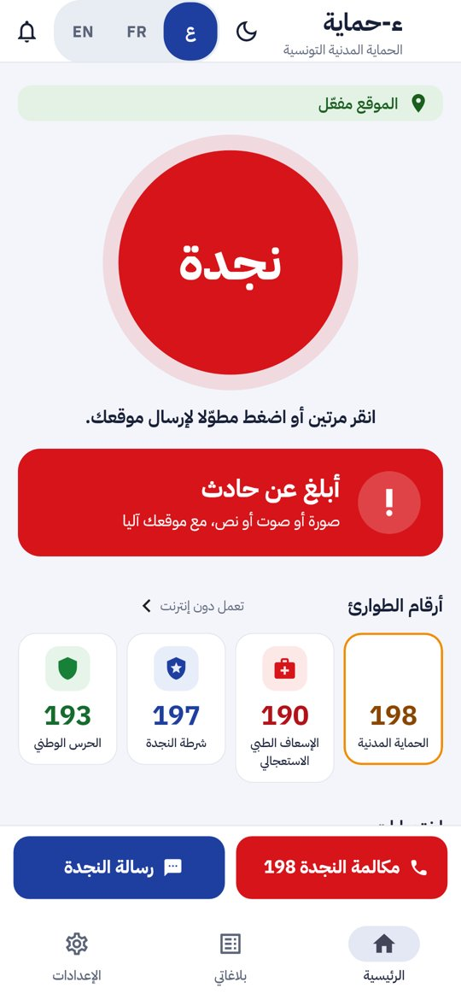
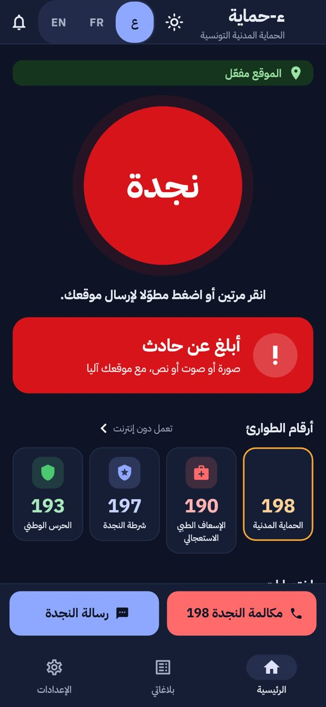
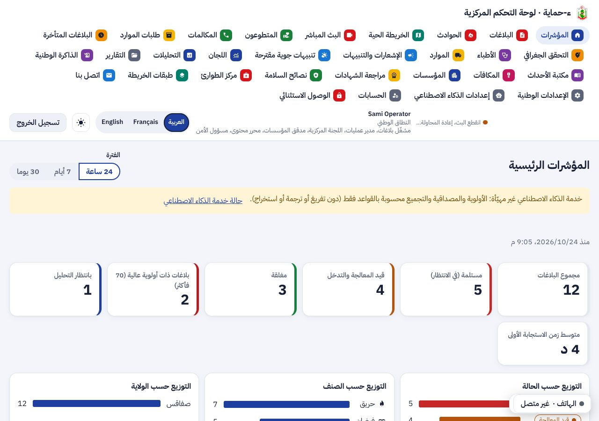
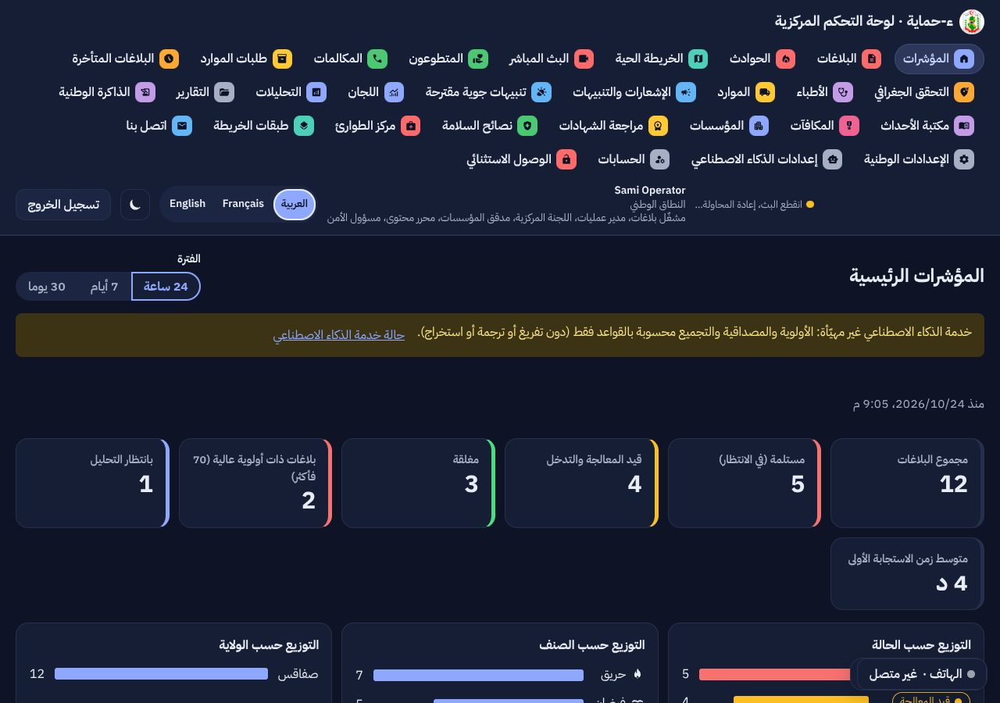

تقرير مرحلة نظام التصميم الموحّد: ألوان زاهية، أيقونات في مربعات ملونة، بطاقات بيضاء مستديرة، شارات، وخط عربي واحد للتطبيق والبوابة ولوحة القيادة
بطلب يامن (2026-10-24): كل واجهات المشروع تتبع أسلوب نموذجي الإضافتين 11 و12. القاعدة مكتوبة في docs/design-system.md حتى تلتزم بها كل مرحلة قادمة: كل شاشة جديدة تُصمَّم بهذا الأسلوب، وكل شاشة قديمة تُنقل إليه عند تعديلها.
الأسلوب خاص بالمشروع: لا شعار ولا أيقونات ولا تصميم منقول من تطبيق آخر. الشعار الوحيد هو شعار الديوان. الأيقونات من Material Symbols (رخصة Apache 2.0) والخط IBM Plex Sans Arabic (رخصة SIL OFL).
| المجال | قبل | بعد |
|---|---|---|
| الألوان | ألوان باهتة مشتقة آليا من لون واحد. اللون الأساسي في اللوحة والبوابة أحمر. | كحلي أساسي، والأحمر للطوارئ فقط، وعشرة ألوان فئات ثابتة في التطبيقات الثلاثة. خلفية رمادية فاتحة وبطاقات بيضاء. |
| الخط | خط النظام. اللوحة تذكر Noto Sans Arabic ولا تحمّله. | IBM Plex Sans Arabic مضمَّن في التطبيق ومستضاف في الويب (مسموح في سياسة CSP لأنه من نفس المصدر). |
| الأيقونات | أيقونات بلا خلفية، وقائمة اللوحة نص فقط. | مربعات أيقونات ملونة في القوائم والاختصارات وقائمة اللوحة (32 عنصرا) والبوابة. |
| المكونات | عناصر Material الافتراضية. | مكونات مشتركة: مربع الأيقونة، بطاقة التنقل، بطاقة الاختيار، الشارة، شريط الأزرار السفلي، الشريط الأحمر للتنبيه، شريط الخطوات، حلقة النسبة. |
كل لون مفحوص بمعيار WCAG 2.2 AA. البرتقالي لا يُستعمل لنص ولا يكون العلامة الوحيدة لأي حالة.
عام المؤسسة والديوان عند حادث سجل الصيانة طلب معلومة
| الجزء | ما أُنجز | الاختبارات | التقدم |
|---|---|---|---|
| وثيقة نظام التصميم | الألوان (فاتح وداكن)، ألوان الفئات، الخط، الأشكال، المكونات، جدول التباين. | تباين محسوب لكل زوج | 100% |
| تطبيق الهاتف | tokens.dart وtheme.dart وcomponents.dart، الخط مضمَّن، الواجهة الرئيسية بالمكونات الجديدة (الاختصارات، أرقام الطوارئ، شريط 198 ورسالة النجدة، هالة زر النجدة). | 411، كلها ناجحة | 100% |
| لوحة القيادة | الرموز والخط ومربعات الأيقونات لكل عناصر القائمة (32)، الأزرار، البطاقات، الاختيار المقسّم، مبدّل اللغة. | 430 + axe على 10 شاشات بلغتين: 0 مخالفة | 100% |
| بوابة المؤسسات | نفس الرموز والخط والمكونات، وأيقونات القائمة. | 89 | 100% |
| باقي الشاشات | تأخذ الألوان والخط والبطاقات والأزرار تلقائيا من الثيم. تحويل كل قائمة إلى بطاقات بأيقونات يتم عند تعديل الشاشة في مرحلتها. | — | تلقائي |




صور التطبيق مولّدة في بيئة الاختبار، فلا يظهر شعار الديوان داخل مربع 198 فيها، ويظهر على الهاتف.